guest@jap.dev:~$ whoami
Lulusan S1 Teknik Informatika Universitas Gunadarma (IPK 3.79 / 4.00). Memiliki keahlian praktis dalam Data Science (Python, Streamlit), Web Development (PHP, MySQL), serta pengalaman pengajaran dan kepemimpinan operasional sebagai Asisten Lab Fisika dan Koordinator Organisasi.
class InformaticsEngineer: # S1 Teknik Informatika, Universitas Gunadarma def __init__(self): self.name = "Johannes Anugrah Prawira" self.degree = "S.Kom" self.gpa = 3.79 self.stack = ["Python", "PHP", "MySQL", "Streamlit", "Scikit-Learn"] self.focus = ["Data Science", "ML", "Web Dev"] def contribute(self, team): return f"Siap berkontribusi untuk {team}!">>> InformaticsEngineer().contribute("Anda")'Siap berkontribusi untuk Anda!'3.79/4.00
IPK Universitas Gunadarma2+ Tahun
Asisten Lab & Pengajar1 HAKI
Hak Cipta Kemenkumham RI10+ Sertifikasi
Pelatihan & Kompetensi ITMengenal latar belakang, visi, dan kompetensi profesional saya
Dokumen Curriculum Vitae:
Lulusan S1 Teknik Informatika Universitas Gunadarma dengan fondasi praktis di bidang Data Science, Machine Learning (Python), dan Web Development (PHP, MySQL, Streamlit).
Memiliki rekam jejak sebagai pengajar dan pembimbing melalui peran sebagai Asisten Laboratorium Fisika Dasar, Pengajar Musik, serta Area Coordinator Organisasi. Terbiasa merancang silabus materi, memimpin instruksi terstruktur, dan menyederhanakan konsep analitis maupun teknis yang kompleks menjadi materi yang mudah dipahami oleh berbagai kalangan.
Siap berkontribusi secara produktif dalam peran Data Science / Data Analyst, Web Developer, maupun IT Trainer & Product Operations dengan mengintegrasikan ketajaman teknis, instructional design, dan komunikasi kepemimpinan.
Rekam jejak pengalaman kerja, pengajaran, serta kepemimpinan organisasi
Karya teknologi, penelitian kecerdasan artifisial, dan karya cipta resmi
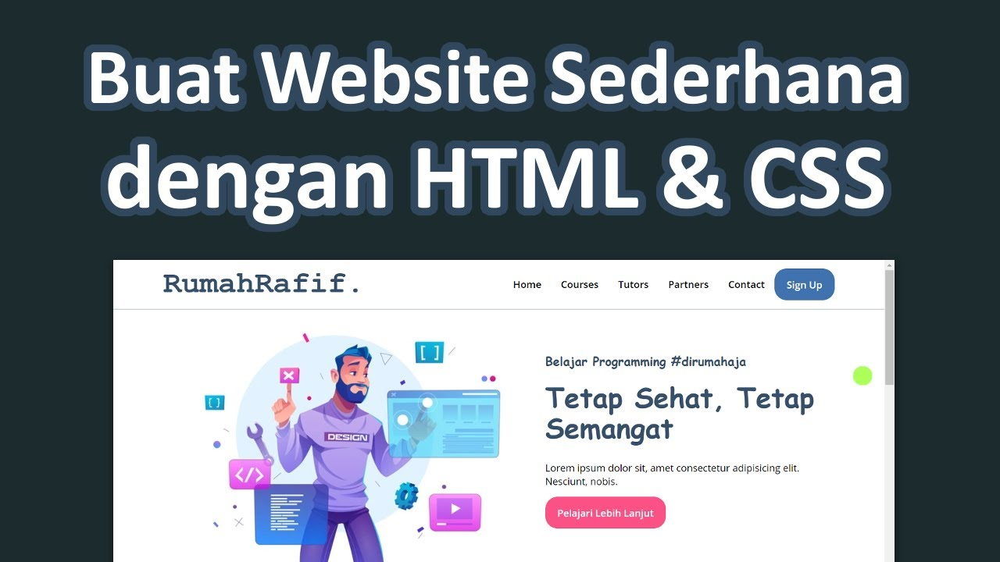
Pemegang Hak Cipta resmi (No. Pencatatan: 001226719) bersama tim dari Kementerian Hukum Republik Indonesia. Sistem informasi berbasis web yang mengotomatisasi pengelolaan ujian, penilaian siswa, dan dilengkapi fitur Chatbot interaktif untuk asistensi tanya-jawab siswa sekolah menengah pertama.
Lihat Demo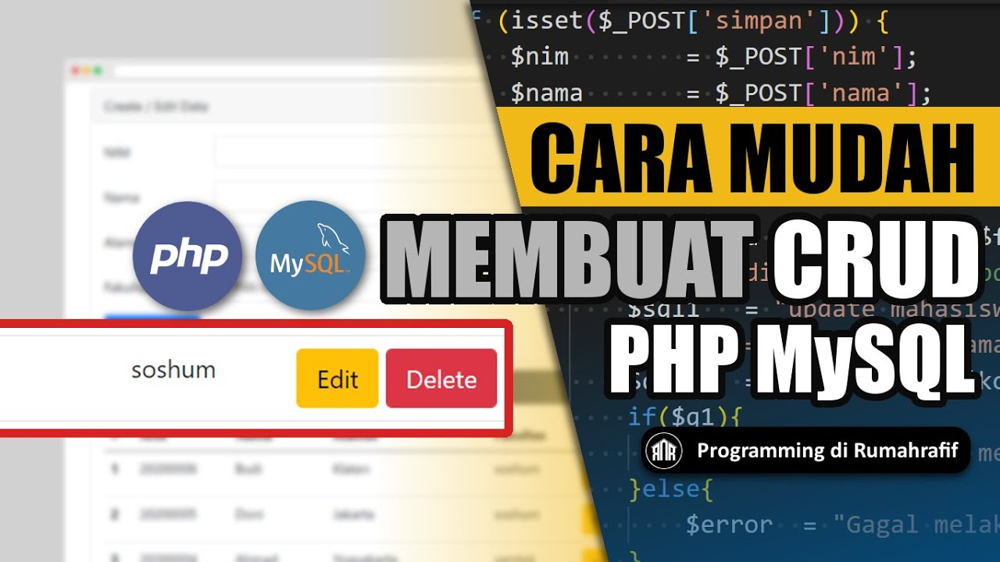
Riset skripsi Teknik Informatika Universitas Gunadarma mengenai implementasi model klasifikasi Machine Learning dengan algoritma Logistic Regression, diintegrasikan ke dalam antarmuka web interaktif berbasis framework Streamlit untuk prediksi resiko dini pasien secara cepat dan akurat.
Lihat Demo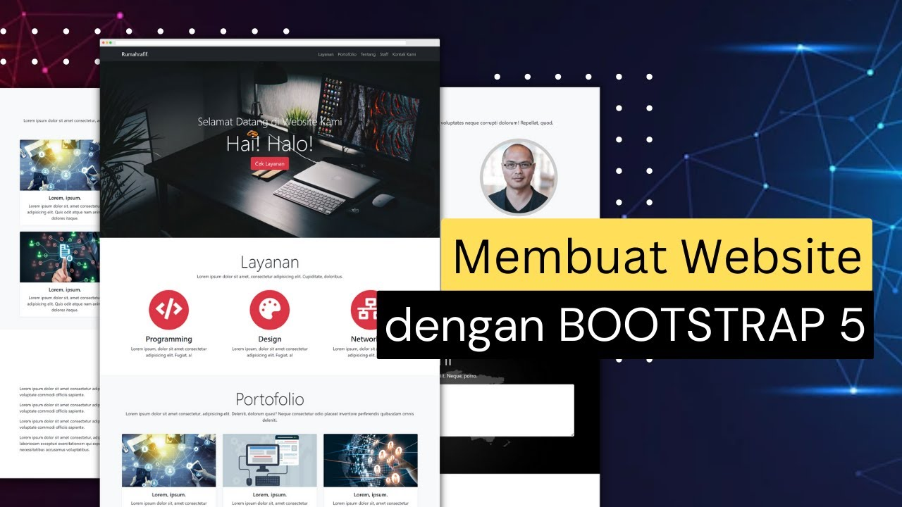
Pengembangan sistem aplikasi web interaktif yang mengintegrasikan manipulasi database relasional tingkat lanjut, mencakup DDL, DML, Sub-Query kompleks, Explicit Cursors pada Oracle 11g, autentikasi pengguna, dan tampilan antarmuka web responsif.
Riwayat akademik formal dari jenjang dasar hingga gelar sarjana
Lulus dengan predikat sangat memuaskan. Menyelesaikan penelitian skripsi di bidang Machine Learning implementasi algoritma Logistic Regression menggunakan Streamlit.
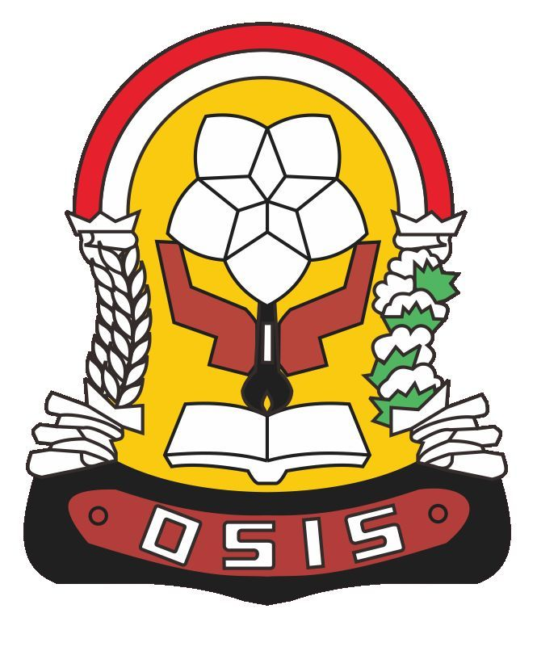
Aktif dalam kegiatan pembinaan kepemimpinan siswa dan penguasaan sains matematika.
Membangun dasar logika, sains, dan minat awal pada dunia teknologi informasi.
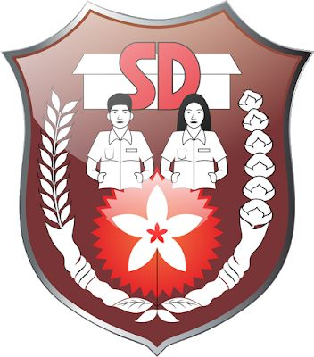
Pendidikan dasar dengan pencapaian prestasi akademik konsisten yang unggul.
Kombinasi kemampuan teknis, analisis data, tools, dan soft skills
Kredensial sertifikasi resmi di bidang pemrograman, database, bahasa, dan psikometri
Sertifikasi kompetensi tingkat menengah pemrograman C# dan ekosistem .NET, menguasai arsitektur ASP.NET Razor MVC, ADO.NET, serta perancangan Web API terintegrasi Entity Framework.
Sertifikasi perancangan antarmuka digital mencakup riset UX, teori grafis & tipografi, wireframing, pemanfaatan komponen Figma, Auto-layout, dan pembuatan prototipe interaktif.
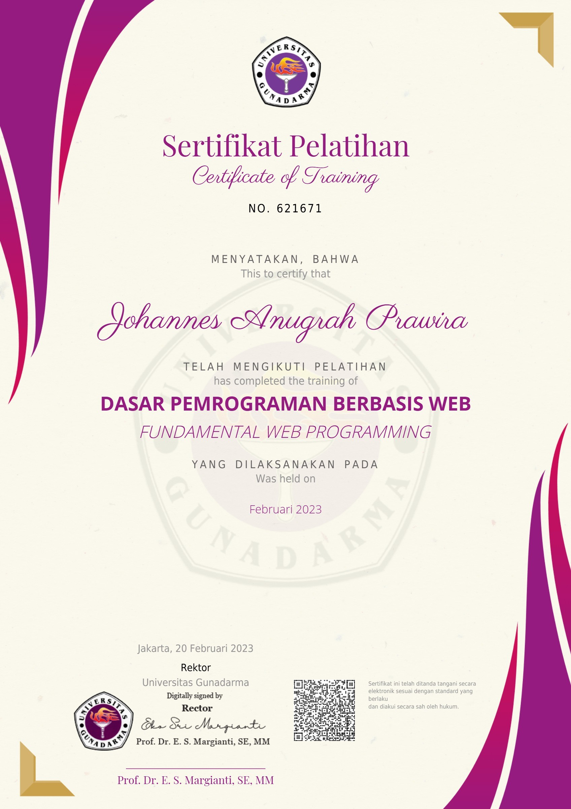
Sertifikasi fundamental rekayasa web mencakup pengantar bahasa Go, arsitektur enterprise J2EE & Servlet, Java Server Pages (JSP), serta integrasi .NET Framework dan C# ASP.NET.
Sertifikasi dasar pemrograman C# mencakup struktur data, logika algoritma & perulangan, Object-Oriented Programming (OOP), web controller dasar, serta konektivitas ADO.NET.
Sertifikasi perancangan dan manajemen database relasional, mempraktikkan DDL, DML, dan query SELECT lanjutan pada MySQL, SQL Server, dan Oracle Database.
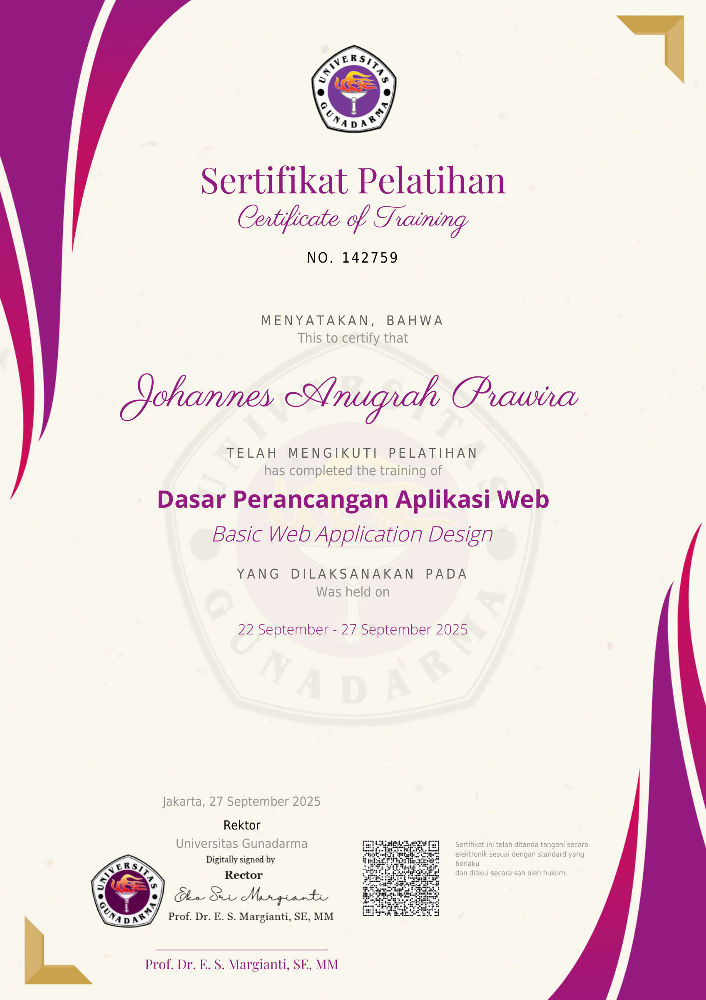
Pelatihan perancangan aplikasi berbasis web mencakup analisis sistem, perancangan database, perancangan user interface, serta implementasi menggunakan PHP dan XAMPP.
Pelatihan dasar JavaScript mencakup struktur program, variabel & tipe data, operator, array, percabangan, perulangan, serta pemrograman berorientasi objek di JavaScript.
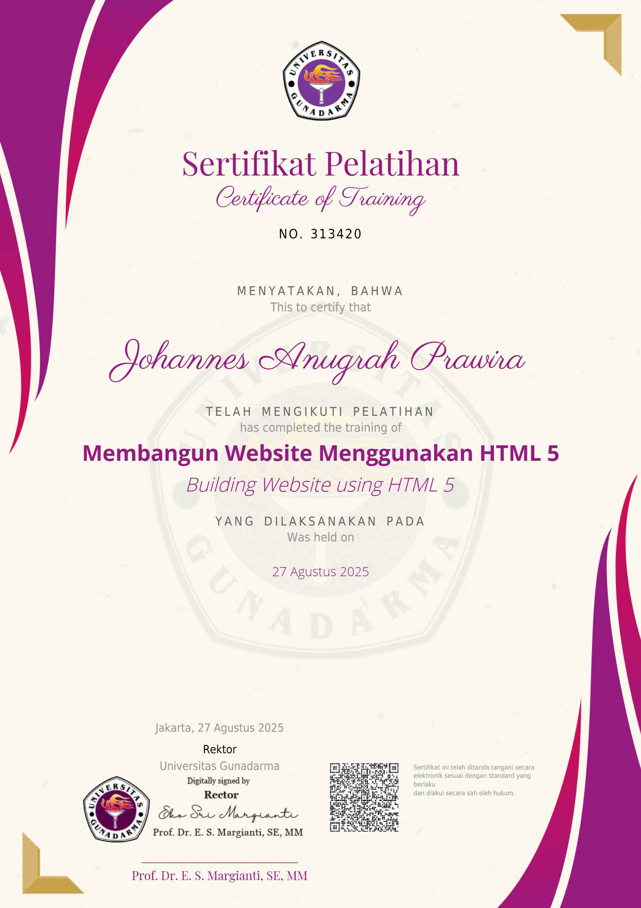
Pelatihan membangun website dengan HTML5 mencakup heading, tabel & list, elemen audio, video, section & article, menggambar dengan Canvas, hingga membuat website sederhana.
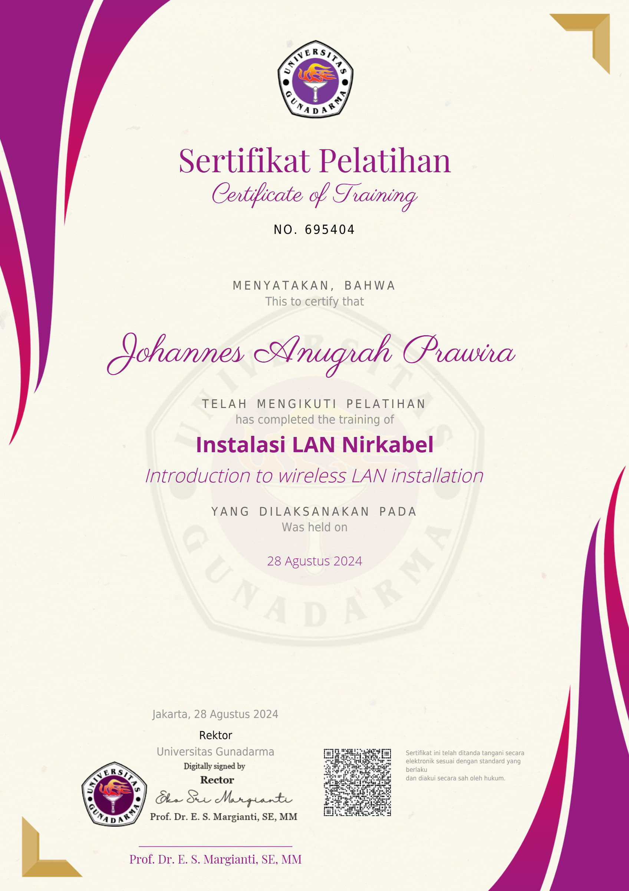
Pelatihan jaringan komputer mencakup pengenalan LAN, teknologi nirkabel, protokol TCP/IP, serta instalasi dan konfigurasi Wireless LAN.
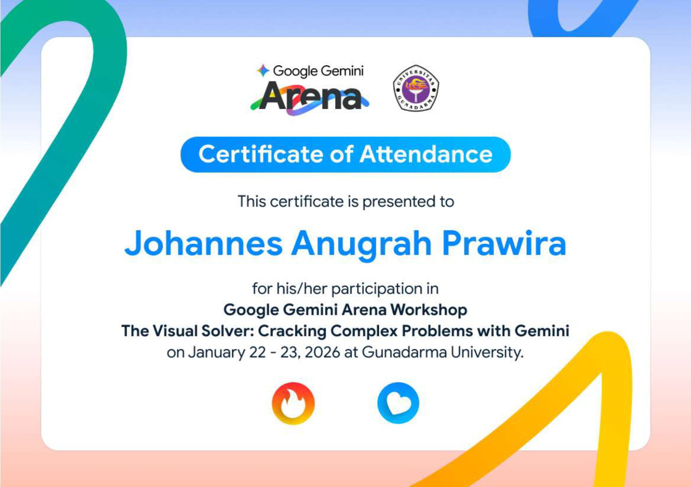
Mengikuti 5 sesi workshop Google Gemini Arena (22–23 Januari 2026): The Visual Solver, Literature Review Masterclass, Career Hack 101, Innovation Lab: From Prompt to Slide, dan AI Research Accelerator Lab.
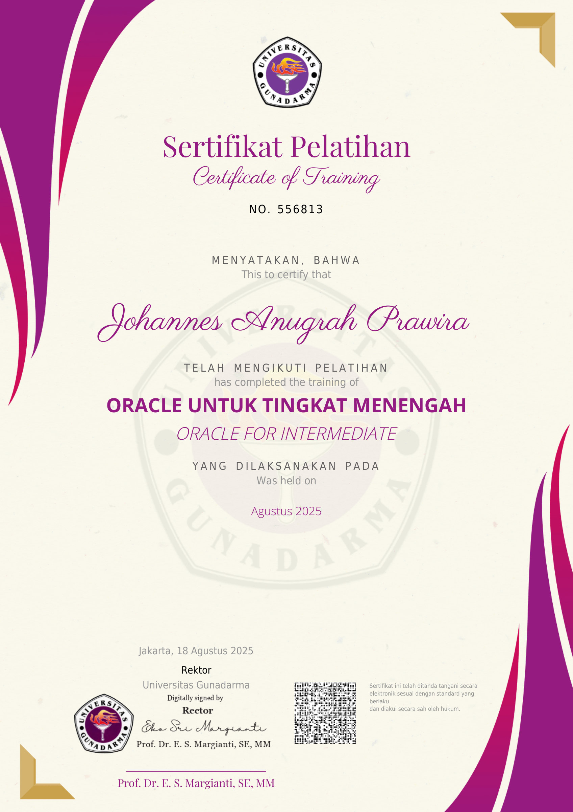
Pelatihan Oracle tingkat menengah mencakup pembuatan & pengelolaan tabel, constraint, view, query multi-tabel, sub query, explicit cursors, serta penanganan exception di PL/SQL.
Pelatihan dasar Oracle mencakup instalasi Oracle 11g, pembuatan database & user, single-row functions, pengenalan PL/SQL, deklarasi variabel, serta interaksi dengan Oracle Server.
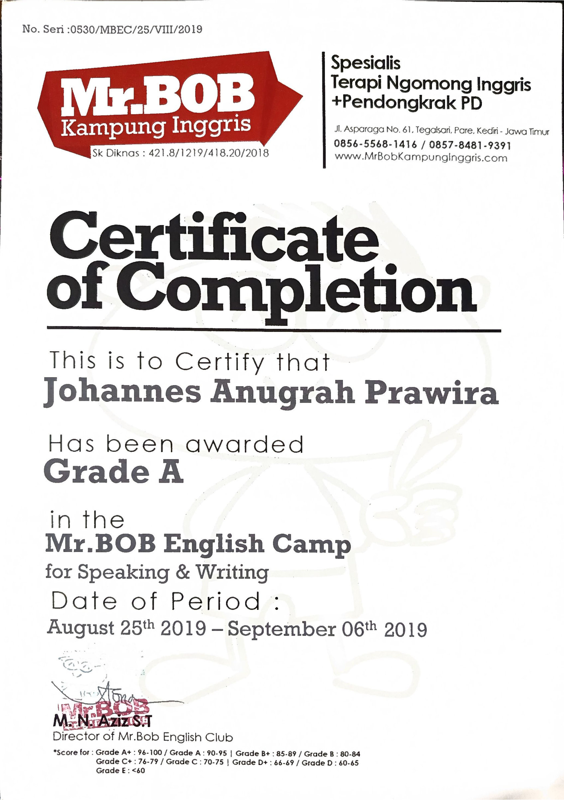
Lulus dengan predikat Grade A (Sangat Memuaskan) pada modul Speaking & Writing, Tic Talk, dan Speak Up 1 untuk keahlian komunikasi publik.
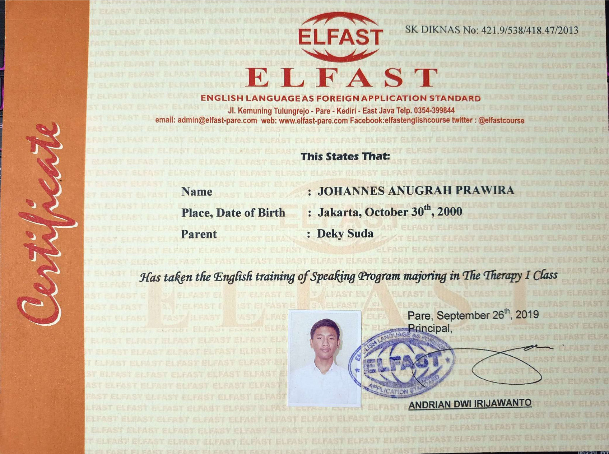
Menyelesaikan program kecakapan bahasa Inggris intensif dengan nilai B+, berfokus pada kelancaran berbicara spontan dan pemahaman audio.
Meraih skor Kategori Tinggi (K3) pada aspek penalaran abstrak dan logika, membuktikan kapasitas analitis kuat dalam pemecahan masalah kompleks.
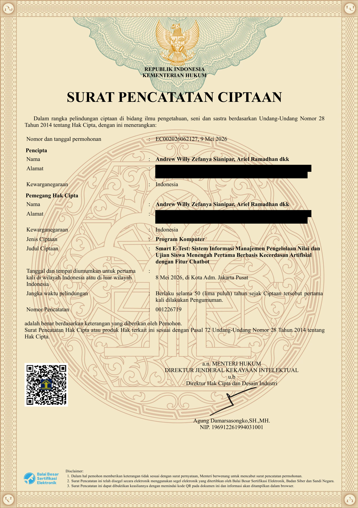
Surat Pencatatan Ciptaan resmi Nomor: 001226719 untuk perangkat lunak sistem manajemen nilai & ujian berbasis AI Chatbot.
Terbuka untuk peluang kerja, kolaborasi riset, maupun diskusi profesional
Jangan ragu untuk menghubungi saya melalui saluran kontak di bawah ini. Saya siap merespons peluang karir, konsultasi IT training, atau kolaborasi proyek data science & web.
Pilih format CV yang Anda butuhkan untuk proses rekrutmen: